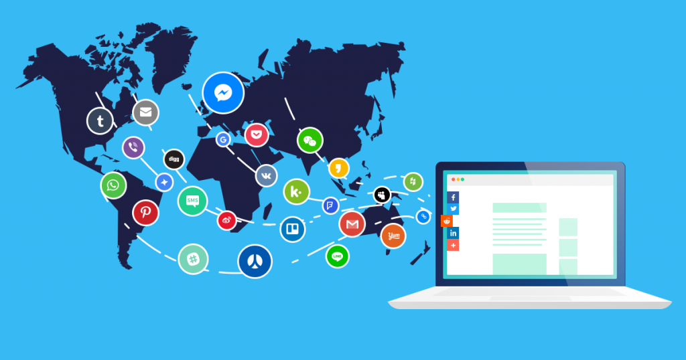

Social
India Size & Location
India, officially the Republic of India, is a country in South Asia. It is the second-most populous country, the seventh-largest country by land area, and the most populous democracy in the world. India has 29 states and seven Union Territories. India shares its land boundaries with Pakistan and Afghanistan in the northwest, China (Tibet), Nepal and Bhutan in the north, and Myanmar and Bangladesh in the east.
Democracy
Democracy is a form of government in which the rulers are elected by the people. One chief factor common to all democracies is that the government is chosen by the people. Features of Democracy include major decisions taken by the elected leaders; free and fair electoral competition; one person, one vote, one value; and rule of law and respect for rights. Democracy is our system for assigning value to the people we elect or the referendums we vote on. It both improves and preserves personal pride and dignity. Democracy typically works better for those who receive the most benefits. Disadvantages include representatives may distort peoples' demands to suit their political preferences. Representatives may not make make themselves accountable enough between elections and can only be removed by elections if they lose the respect of the people.
French Revolution
The French Revolution was a period of major social upheaval that began in 1787 and ended in 1799. It sought to completely change the relationship between the rulers and those they governed and to redefine the nature of political power. The French Revolution was a period of time in France when the people overthrew the monarchy and took control of the government. It lasted 10 years from 1789 to 1799. It began on July 14, 1789 when revolutionaries stormed a prison called the Bastille. The Revolution unified France and enhanced the power of the national state. The Revolutionary and Napoleonic Wars tore down the ancient structure of Europe, hastened the advent of nationalism, and inaugurated the era of modern, total warfare.
People As Resources
People as a Resource is an effort to explain population as an asset for the economy rather than a liability. Population becomes human capital when there is investment made in the form of education training and medical care. Human capital is the stock of skill and productive knowledge embodied in them. The positive side of a large population is often overlooked. We look only at the negative side considering only the problems of providing the population with food, education and access to health facilities. When the existing 'human resources' is further developed by becoming more educated and healthy, We call it Human Capital Formation. There was a division of labour between men and women. Men were paid for their services but to the contrary women were not paid for their services. Education played an important role for individuals to make better use of economic opportunities. Most women used to work in places where there was no job security. In this sector, employment was characterised by irregular and low income. Basic facilities were missing like maternity leave, childcare and other social security systems. However, women with high education and skill formation were paid highly. It adds to the productive power of the country just like 'Physical Capital Formation'.